Region Description
 The Appalachian Mountains are a mountain range in the eastern side of the Unites States.
It is generally considered the geographical divide between the eastern seaboard of the United States and the Midwest region on the country, because the Eastern Continental Divide follows them.
The mountain range goes through 14 states: Georgia, North Carolina, Tennessee, Virginia, West Virginia, Maryland, Pennsylvania, New Jersey, New York, Connecticut, Massachusetts, Vermont, New Hampshire, and Maine.
They are the second largest mountain range, stretching 1,500 miles and covering 68,100mi2 of the United States; much less than the size of the Rockies (3,000mi; 300,000mi2).
Elevations range from 300ft to 6,000ft, but the highest point is in the South at Mount Mitchell, California where the elavation reaches 6,684ft tall.
The Appalachian Mountains are a mountain range in the eastern side of the Unites States.
It is generally considered the geographical divide between the eastern seaboard of the United States and the Midwest region on the country, because the Eastern Continental Divide follows them.
The mountain range goes through 14 states: Georgia, North Carolina, Tennessee, Virginia, West Virginia, Maryland, Pennsylvania, New Jersey, New York, Connecticut, Massachusetts, Vermont, New Hampshire, and Maine.
They are the second largest mountain range, stretching 1,500 miles and covering 68,100mi2 of the United States; much less than the size of the Rockies (3,000mi; 300,000mi2).
Elevations range from 300ft to 6,000ft, but the highest point is in the South at Mount Mitchell, California where the elavation reaches 6,684ft tall.
 The Appalachian Mountains' climate temperature ranges from about below 50°F in the north, to about 64°F in the south.
All areas of the mountain range are subject to frost during colder seasons.
Annual precipitation varies from 30in in the valleys to up to 80in on the highest peaks; the highest in the United States. Snowfall is about 24in to 30in.
Its biome is known as Temperate broadleaf and mixed forests.
This means that its producers are mainly deciduous trees, which lose thier leaves in the fall/winter.
The Appalachian Mountains' climate temperature ranges from about below 50°F in the north, to about 64°F in the south.
All areas of the mountain range are subject to frost during colder seasons.
Annual precipitation varies from 30in in the valleys to up to 80in on the highest peaks; the highest in the United States. Snowfall is about 24in to 30in.
Its biome is known as Temperate broadleaf and mixed forests.
This means that its producers are mainly deciduous trees, which lose thier leaves in the fall/winter.
Appalachia is an amazing mountain range that we need to try and preserve in its natural state for as long as we can.
These ancient mountains were formed over 400 million years ago, and many animals depend on the climate here to stay healthy.
Deforestation, urban development, mining, agriculture, unsustainable forestry and fragmentation caused by dams and roads put the region's public, economic and ecological health at risk.
We need to preserve the Applachians so that the the 80,000 occurences of rare species living here; and other animals such as bobcats, black bears, moose, elk, and 64 high-priority bird species that use the mountains and valleys as a migration corridor, can continue to do so as they have been.
Vegetation
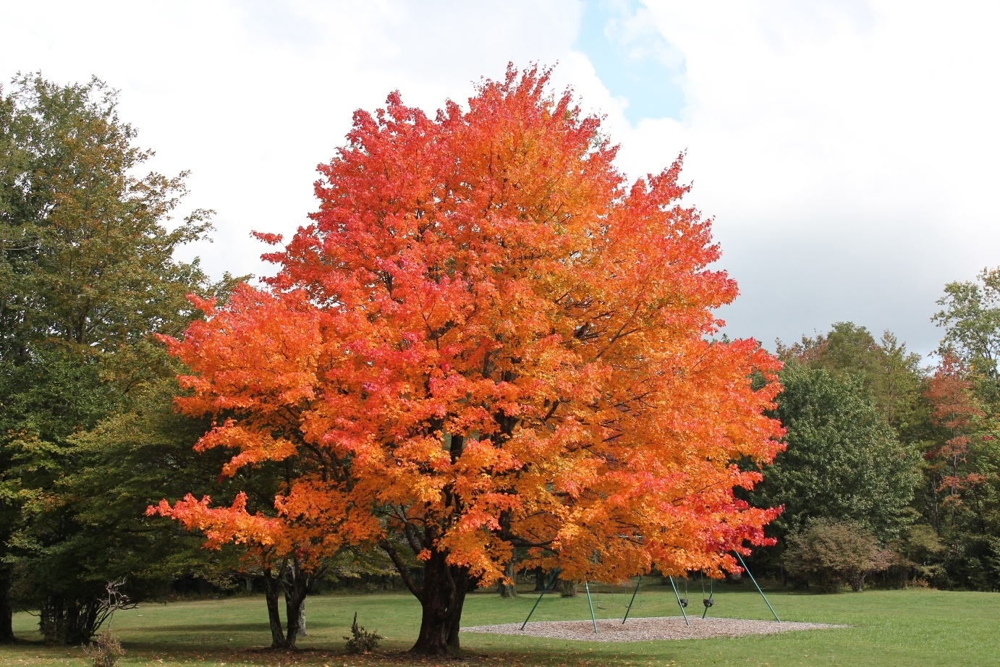
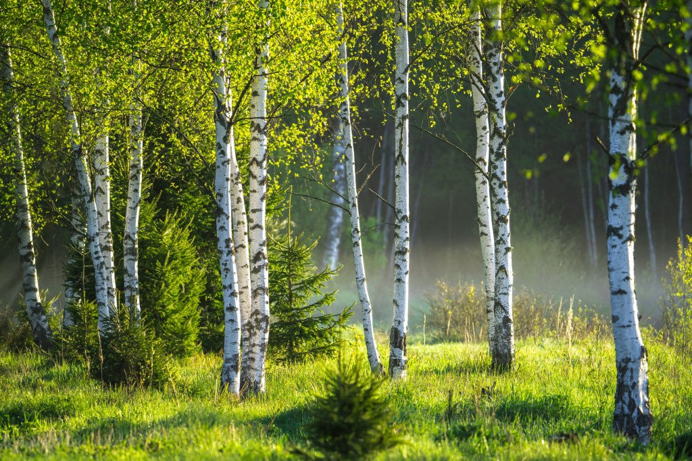
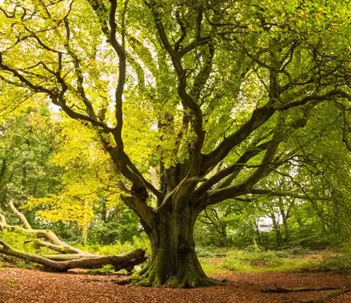
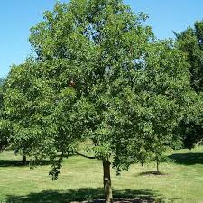
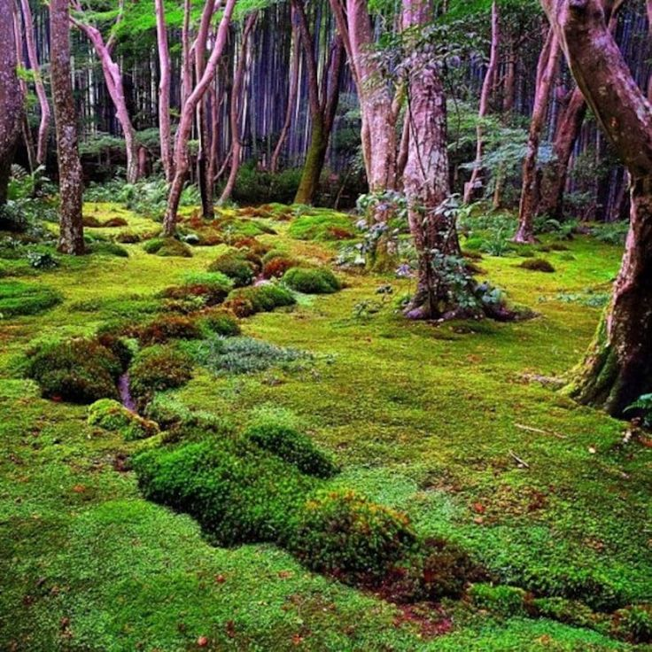
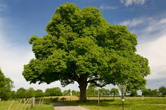
There are over 6,300 different species of plants in the Appalachian Mountains, 158 of which are
trees.
Because the habitats bere are so diverse; they likely harbor more rare, threatened, and endangered species than any
other national park unit.
This is really what makes the Appalachians such a great and thriving ecosystem: diversity.
The most common trees are sugar maple, birch, beech, and buckeye.
There is also lots of moss that grows in the deciduous forests, specifically lots of mood moss.
Sugar maple trees thrive here becuase of the loam soil, which is soil that is a mixture of sand, silt, amd clay that holds nutrients and has a texture that reatins water long enough for plant roots to access it, yet still drains well so the plant roots don't sit in the water and rot.
Birch trees do well in the Appalchians becuase the this area is at an almost perfect elevation for them, they like the moist climate, and they are protected by northernly or easternly slopes.
Beech trees like coarse-textured, dry-mesic soils whih is found prevelantly in the Appalachias.
The silty clay loam, rich in organic matter, slightly acidic, and moist but well drained soil of the banks of the streams in the APpalchians are perfect for Buckeye trees thr thrive here.
Mood moss love the shaded, moist floor of deciduous forests' forest floor, so it also thrives in the appalcahians.
Another tree that used to thrive in the Appalahcian Mountains is the CHestnut tree.
Sadly, they were swept by a chestnut blight; which is a disease cuased by the airborne fungus Cryphonectria parasitica.
Animals
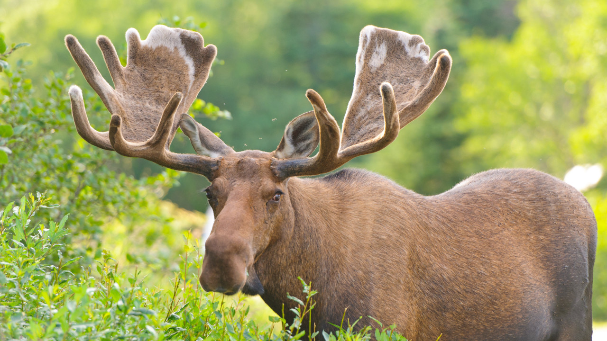
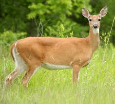
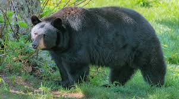
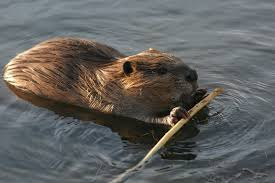
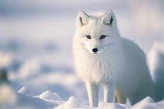
There are many animals in the Appalachians.
The mountain range is so big that climates and ecusystems can greatly vary, depending on what area you're in.
Some of the most common animals in the Appalachian Mountains are: moose, white-tailed deer, black bears, beever, and foxes.
Moose love the appalachians because of thier large size and insulating fur, they have to stick to cold climates; just like the appalchian mountains.
White-tailed deer live all over eastern America.
They favor forests and anything from norht-termperate, to subtropical and arid enviorments.
The Appalchian mountians are just a giant forest for them, so thier is a large population of them here.
Black bears love forests just as much as deer do, becuase of their versatile diet that come from being a hunter-gatherer.
They eat lots of things that are abundant in forests, like berries, fish, fruits, and insects.
Beavers like to live in the streams and rivers in the Appalachians because of thier slicked hair, theya re very fast swimmers.
There is also lots of woods in the Appalachians for them to build homes with.
Foxes have great camofouge in the high elevated mountains.
Thier coat is white, blending in with the snow.
They also can live in the forests, as they like to eat rabbits, rodents, birds, and frogs; so there is an abundant amount of food here.
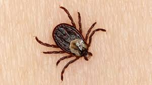
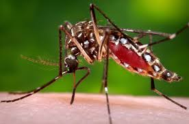
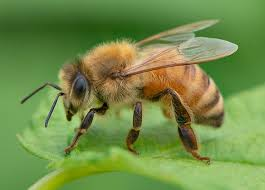
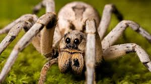
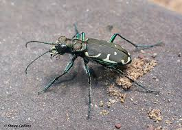
While vertabrates are common, the less thought of invertabrates, also play a huge role in the Appalachian Mountains' ecosystem.
They help decompose dead animals, keep the soil fresh for plants, and keep other populations from getting out of hand.
Common invertabrates here are ticks, mosquitos, bees, spiders, and the Appalchian tiger beetle.
There are lots of animals in the forests of the Appalchians, so there are lots of food sources for ticks to get thier nutrients.
During the winter, ticks will go underground and in leaf-litter to stay warm; when snow falls it only insulates them more.
Mosquitos are very common in the appalachians during the summer becuase it gets very hot and humid, perfect for mosquitos to thrive.
Bees are needed almost everywhere, but because there are so many vast forests in the Appalachians, there is an abundant population of bees to pollenate all the plants.
Appalachian Tiger beetles like to live in sand and gravel scour zones on cool, forested, mountain stream watersheds.
They use hot microhabitats to maintain thier body tempurature just below thier lethal limits.
Microorganisms
It's hard to find any information about microorganisms in the Appalachian Mountains, but there are a couple common ones.
Proteobacteria live iare abundant in diverse ecosystems, which makes the forest floor and riverbeds of the Appalachians a perfect place for them to thrive.
They are injected into host plant cells via a type III secretion system and bind to genomic DNA to alter transcription in the host cells, thereby facilitating pathogenic bacterial colonization.
Acidobacteria is one of the main bacterial phyla in soild and peatlands.
They a play a pivotal role of modulation of biogeochemical cycles and influencing plant growth.
Actinobacteria produces secondary metabolites, which are substances like toxins, gibberellins, alkaloids, antibiotics, and biopolymers.
Primary metabolites include alcahols such as ethanol, lactic acid, and certain amino acids.
The metabolites that actinobacteria produces have antibiotic, antifungal and anticancer qualities; so they benefit other organisms.
This kind of bacteria is found almost everywhere as it can survive the extreme cold of the Artic, boioing hot springs, and the salty seas.
Yeasts are found nearly eveywhere in the substrate of the termperate forests of the Appalachians.
Yeast is a single-celled living organism that transforms sugar and starch into carbon dioxide and alcohol through fermentation.
Rock gnome lichen, otherwise known as Gymnoderma lineare, is and endangered endimic species of the southern Applachian Mountains.
It's commonly found in areas of North and South Carolina, Tenessee, and Georgia.
Rock gnome lichen is endangered becuase of threats such as recreational use of habitat by hikers, collectors, changes in microclimate, air pollution, and climate change; and was declared so in 1995.
Keystone Species
Define keystone species and describe one. Exlain how other organisms benefit/rely on it, and what would happen if were removed from the ecosystem
Symbiotic Relations
describe one parasitic, mutualistic, and commensalistic symbiotic relations found here. Explain how they help, harm, or rely on eachother. Explain the relationship. Alaos explain what would happen if either were removed from the ecosystem.